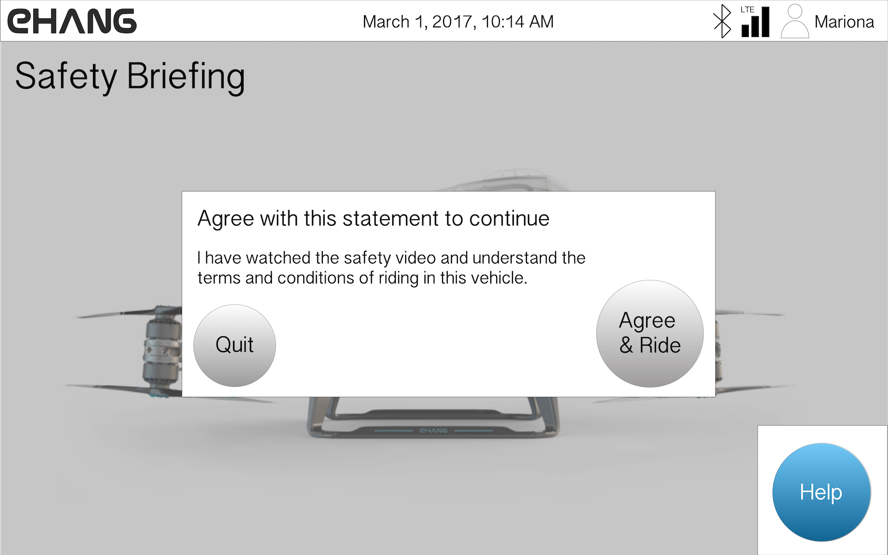
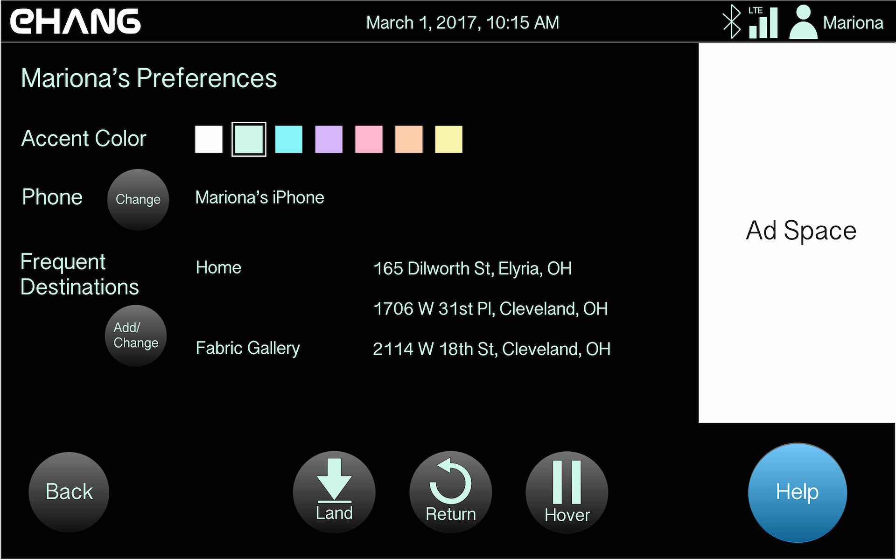

< Back
These are sample screens for a driving application for the inside of an autonomous flying service (EHANG 184), created as part of the Software User Interface Design course at Tufts University and later refined. Originally, I had all sidebar functionality showing at once, but once I learned about progressive disclosure, I replaced the full sidebar with the "swipe side for more" option to declutter the main page. All mockups were made in Adobe Illustrator.

I often like to make a flow diagram so that I can visualize where I would like my system to have a linear structure or a web structure, for example, or to ensure that the primary functions are available on the proper screens. In this case, I prioritized safety by enabling help functions on all screens.
Two requirements for this project were revenue-driven: ad space must occupy 15% of the screen at all times (unless there is a good reason not to include ad space on a given screen), and the EHANG shop must be prominently available.

Here is the welcome screen that greets the user when they enter the flying vehicle. A login is necessary to identify the user, in order to guarantee that the passenger is certified to fly (as a passive user or a pilot super-user) and to charge the proper user for their flight. In this screen, the user has requested the flying service ahead of time on the (not yet existent) EHANG 184 app or website, and so the user's name is already displayed and must log in to ensure that the proper user is using the vehicle at their reserved time.
The user must watch and agree to the safety briefing in order to fly. There is no way to skip the briefing - this way, even a regular user must watch before each flight, and will view updated videos whenever they are pushed.

For a user who did not reserve their flight or who reserved an amount of time rather than a specific flight with start and end points, they must type in their destination and waypoints. It is possible to set frequent destinations - those are the ones displayed when the user first clicks on the search bar. The user can also click the map to add a waypoint.

This is the in-flight screen. The user may access additional settings and pages by clicking or swiping on the sidebars. They may also choose to land, return, or hover at any time - I chose to have these available to make the user feel in control and to make users feel more comfortable about flying in a self-driving vehicle. These buttons are on the right side of the screen because this user has indicated that they are right-handed on their profile page online.

This screen shows the "Cabin Settings" sidebar selected during flight.

This screen displays the night mode coloring for easier reading in darkness. It also shows the "Entertainment" sidebar selected with the contact button selected as well. With more time, I would explore ways to declutter this screen, perhaps by showing a separate contact page at the expense of seeing the map.

When the user selects the "Help" button, an EHANG representative speaks to them over the intercom, gives typed instructions on-screen, and circles the appropriate portions of the screen to focus on. I chose not to have a video chat because I thought the video would distract the user from their situation and add to their mental workload, both of which would increase stress level and decrease performance.

This is the in-flight screen for a left-handed super-user (certified pilot): they can drive the vehicle themselves using the joystick, and have the option to switch to auto-pilot (what most users use) at any time. A right-handed user would have the joystick to the right of the Hover button.
The user can change some settings during flight, but not all.
Users can change accent color in-flight because this is where they interact with the driving app - unless some sample screens are shown on the EHANG website profile page, the user would not see what the colors look like in context save for in the actual app.
Users can connect a different phone in-flight to have access to texting, calling, and music through the vehicle mic and speakers.
Users can set and name new frequent destinations in-flight because it is during flight that it is most convenient for users to think about where they could see themselves traveling frequently in this flying vehicle. They also have the power to edit destinations in case they typed them incorrectly online.
< Back